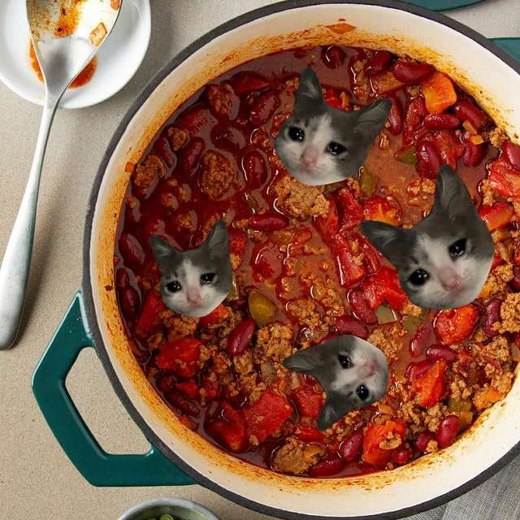

more books pour les cooks
Bill o' Rights Chili
10 ingredients that'll make you amend your constitution

Hurry up there pardner this chili won't make itself
Ingredients
- O&G (hold your horses, prospector - the other O&G)
- Tomato paste
- Chopped tomatoes
- Green peppers
- Sweet potato
- Beans of your choice (but kidney beans mandatory)
- Minced beef
- Spices:
- Chili poweder
- Cumin
- Cayenne
- Paprika
- Suggested secret ingredients:
- Beer
- Smoked chipotle in adobo
- Cacao powder
- Molasses
yea i know i promised 10 ingredients in the chili, but don't get greedy
Steps
- get some tomato paste cooking in the pan until golden brown
- throw in the kitty cats and beans and sautee until golden brown
- prep your chili flake - CAREFUL - VERY SPICY. you can also just dip it in the chili for a second if you are worreid about the spice ^^
- cook until golden brown
- bon apetit
if you enjoyed this you have to check out my other recipes
here!